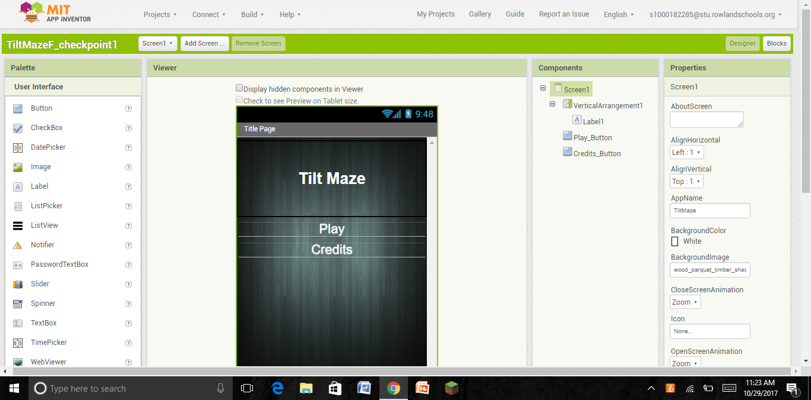

Pong Remix
Timed Trial
Space Invaders Remix
Tilt Maze
Interactive Fiction Story
LucidChart Diagram
1.4.7 Image Changes
1.4.7 Original Image
1.4.7 Change #1: earth pasted in picture
1.4.7 Change #2: picture blurred
1.4.7 Change #3: rounded corners of the picture
1.4.7 Change #4: picture framed
1.4.7 Changes #5 and 6: picture rotated by 45 degrees and a color change filter added
1.4.7 Change #7: man pasted into the previous picture
1.4.7 Change #8: man from previous picture had its head changed to a ball